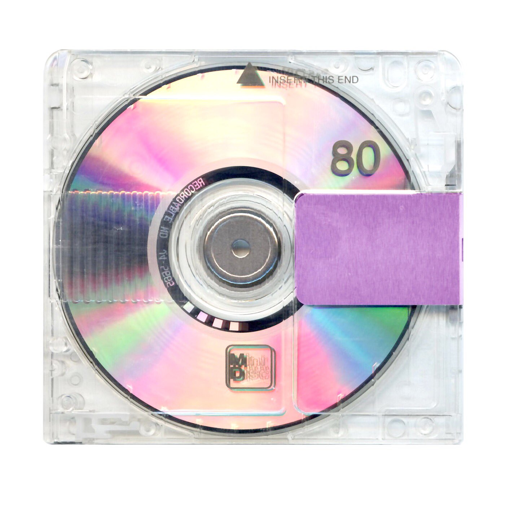
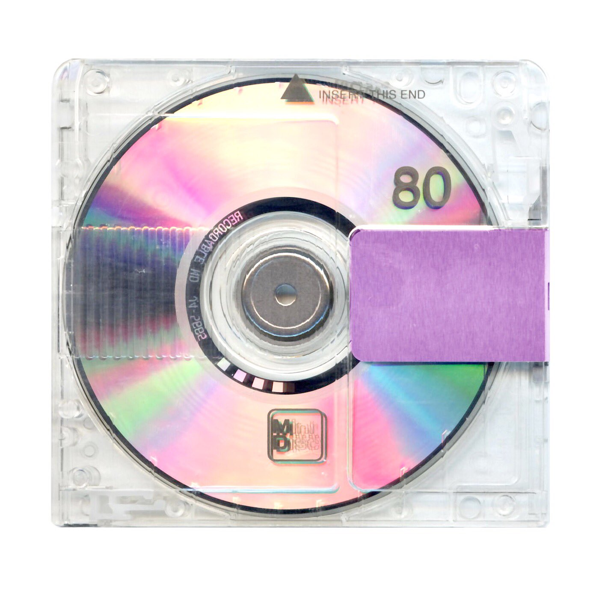
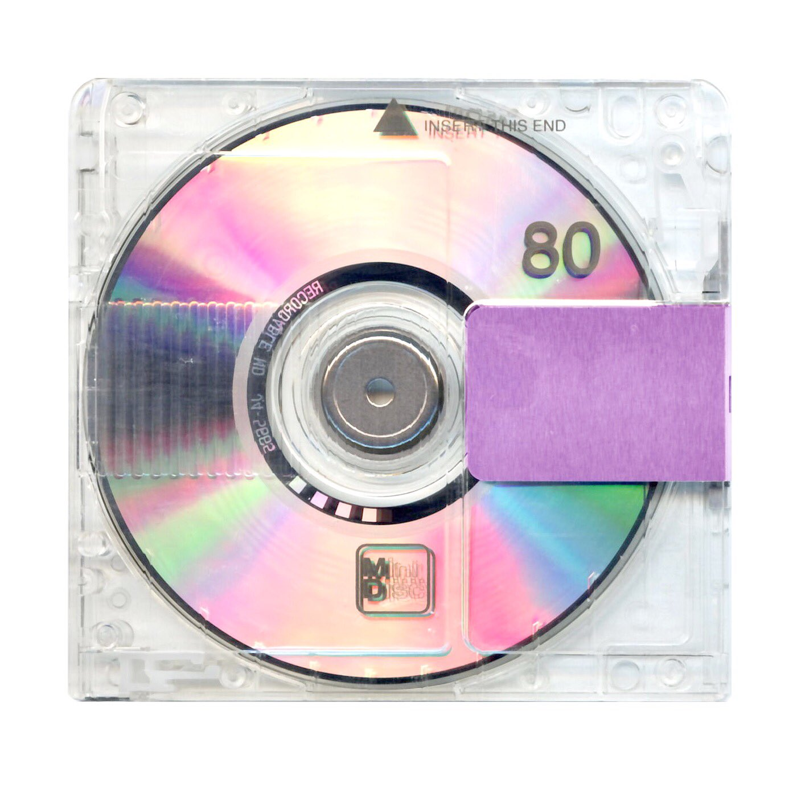
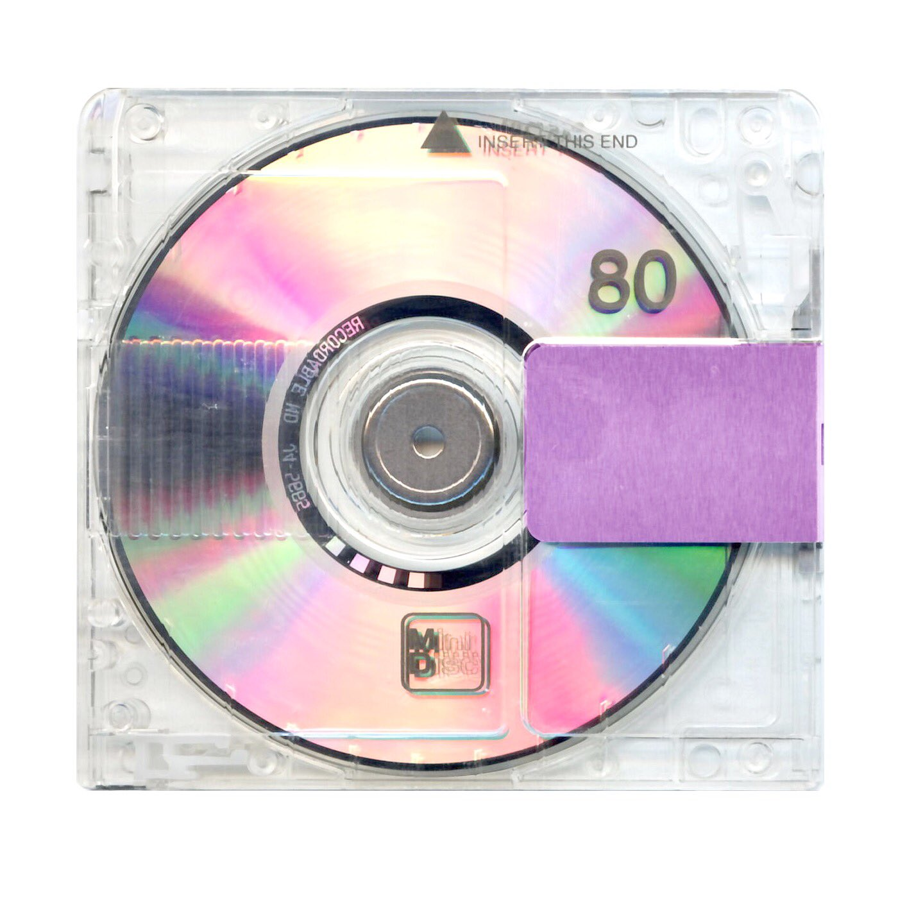

Music is one of the every growing artforms that people participate in. With the advancement of internet technology, it has been much easier for artists to work with producers and engineers from around the world without all being in the same studio at the same time all the time. Releasing your music to hear at the best time can make or break the first week sales of an album which are always the most important for album sales.
With the advancement of internet technology however, the growing world of hacking has bled into the music industry. Hackers have made one of the most important parts to success in music is picking the best time to release it. With hackers diving into the music industry hacking has evolved into hacking into computers owned by people within the music industry working on songs and leaking and selling them online. Hackers would snag artists' music through ways of hacking into emails, computer cloud files, and through knowing people working with the artists showing others music and they snag it. The ways hackers can get to artists' music through computer hacking are endless.
A notable moment was for Kanye West when in 2018 he was working on his 2018 Project Yandhi and while working on the album, his project began to leak online. Sellers selling things from fully finished songs, demos, studio sessions, stems to music beats etc. This was horrible for his album as a project he wanted to keep down until release began getting put online for prices. These prices would range from $50-20000. People would build communities online doing group buys in attempt to build the funds to buy the song. This would completely interrupt his process for the album, and it basically made him scrap a project he put millions of dollars he created.
The community for leaking has grown as a lot of big artists in the industry have developed cult-like fanbases that have people that just will not wait for artists to release music. Every artist can have people who will do this and the motivation to make money off it is very enticing even for hackers not even interested in the artist's music but just the money. One of the most popular leaking groups from the more prime years of music leaking was MusicMafia. MusicMafia was notorious for getting some of the most popular artists unreleased songs and selling them online through bitcoin so that their transactions were anonymous. One of their most high selling sales was Kanye West’s song Can U Be a song for his unreleased album Turbografx 16 that would be leaked online to be sold by MusicMafia in 2016 in a private buy for $10,000. There is so much money in the leaking industry as many people are wanting to get to listen to new music from artists every day and not wait for the scheduled plan artists have to release music to get the most listens. This has caused many artists to lose potentially millions of dollars on music due to hackers leaking their music earlier. Notable artists who have had this happen to them are Kanye West, Juice WRLD, 6ix9ine, Playboi Carti, and Beyonce.
"I refuse to follow the rules where society tries to control people with low self esteem." - Kanye West